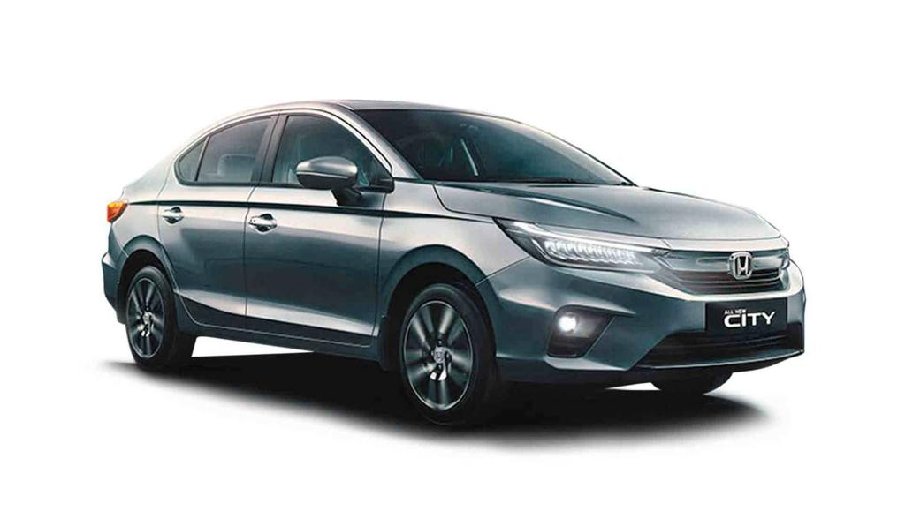

The Honda City has 1 Diesel Engine and 1 Petrol Engine on offer. The Diesel engine is 1498 cc while the Petrol engine is 1498 cc . It is available with Automatic & Manual transmission.Depending upon the variant and fuel type the City has a mileage of 17.8 to 24.1 kmpl . The City is a 5 seater 4 cylinder car and has length of 4549mm, width of 1748mm and a wheelbase of 2600mm.
Less
-Some key specifications:
City mileage: 15.4 kmpl
Engine Displacement:1498
Max Power:97.89bhp@3600rpm
Seating Capacity: 5
Fuel Type: Diesel
Transmission Type: Automatic
Boot Space: 506L
Service Cost: (Avg. of 5 years)Rs.12,229
No. of cylinder: 4
Max Torque (nm@rpm):200nm@1750rpm
Fuel Tank Capacity: 40L
Ground Clearance Unladen:
Turbo Charged: Yes
Drive Type: 4x4
For more details you can visit the official website:
